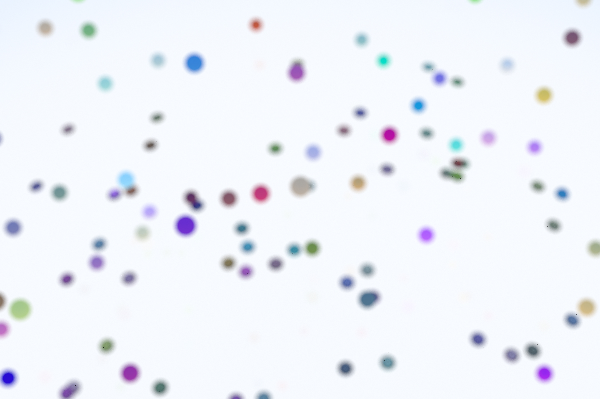
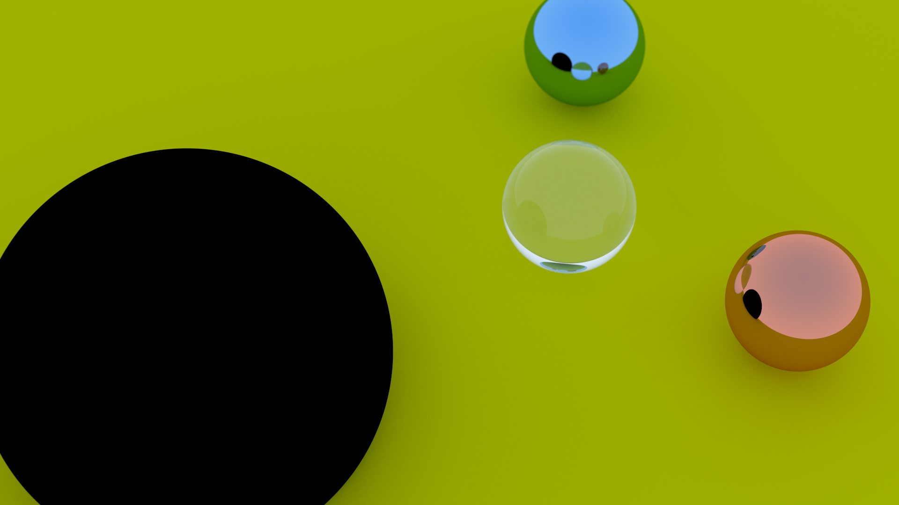
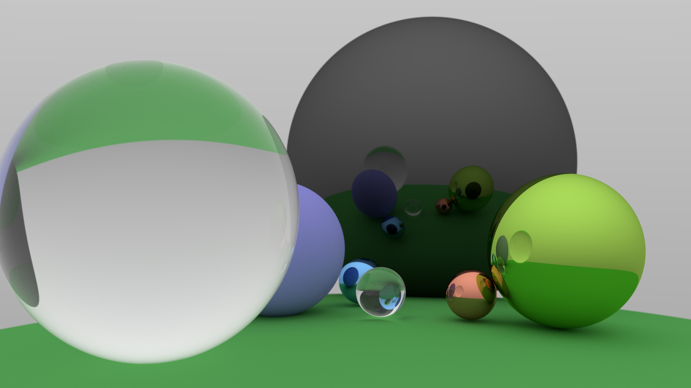
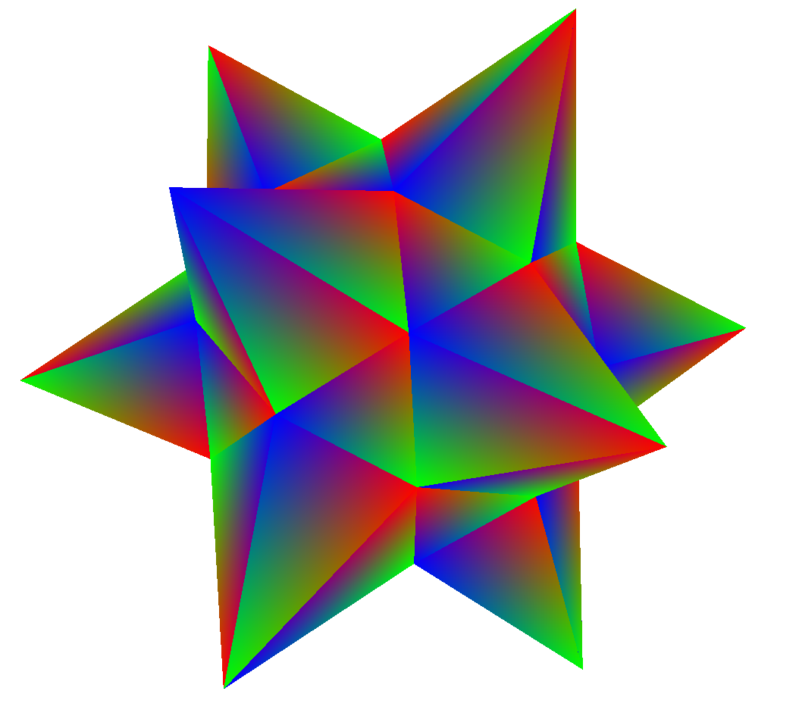

Computer Scientist
Ray Tracer
April 2019
During the second semester of the second year of university i discovered the field of Computer
Graphics,
that stricken me. I decided to learn more about this topic and i found the renowned Peter Shirley
guide,
Ray Tracing in one weekend. At first impact the guide was really intuitive, and written
in a
really simple way such that even a beginner could comprehend and start to code, so i did.
This is the repository that i did, there
are some renders
inside it. All the code runs on the CPU, this means that it takes lot of time for produce a render
with a decent
amount of samples. For this reason, i would like to realize a GPU version of the same Ray Tracer
that i did for the project
of the course GPU Computing (of the Master's degree). This time the new Ray Tracer
will be written in CUDA C
and the major computations will happen on the GPU, the speedup in respect of the CPU version will be
a lot
(i will do a comparison about it with some profiling tools or libraries).
I still love this topic, and i would like to dig deeper in the Ray Tracing world, since it's really
affascinating to me. But i
think i will have to wait a bit since the university workload it's a lot at the moment.



Triangulation&Tessellation
Computational Geometry Course, March 2020, @UNIMI

The aims of this project was to study how the tessellation works with simple domains and to
implement the basic logic for triangulate the vertices of simple
objects like cubes and then with more complex like torus, sphere and cylinder.
For the course project there was also a need to produce a report in the form of website
(fully in italian) which is hosted from the university's mathematics department. It contains
the theory behind the software, the technique involved, user manual of the application and lot of
example videos about the application.
Is possible to download the source code of the project from the GitHub Repository by
following this link.
By accessing the authors
section of the course website, is possible to read under my
name a note from the course teacher saying:
"has developed the project related to the triangulation and tessellation of the lateral
surface of some geometric solids obtaining truly amazing visual effects." - Prof. Alzati
Fix-It
Bachelor Thesis, December 2019, @UNIUPO
The complete title of the thesis is "Fix-it : Stream processing on event-driven system for managing public disservices". The project itself consist in developing an E.D.A. system that will work on a mobile application called "Fix-it", which is developed using Android Studio. The system is implemented with Google Firebase and Apache Kafka (especially for the stream processing). Different technologies involved in the implementation of this project like REST API, Stream Processing and Publisher-Subscribe pattern.
The project was developed only by two guys, we used the Agile Manifesto concepts for designign our workflow, everything was organized with a Kanban Board on Trello so that we could work consistently by subdividing the work in small chunks.
The whole thesis is downloadable as PDF here, was written using LaTeX on Overleaf, the Abstract is downloadable here. I atteined a presentation of my thesis on Google Team due to COVID-19, and i talked about my work using these slides. The project was realised under the supervision of the Prof. Davide Cerotti.
Image processing library
Multimedia Systems Course, July 2019, @UNIUPO
A simple a library made in Java for learning how the JPEG pipeline works using DFT and DCT, following this link for the repository.